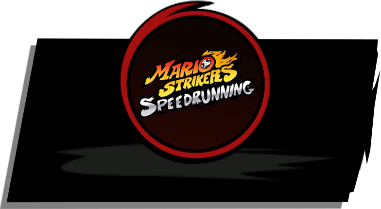
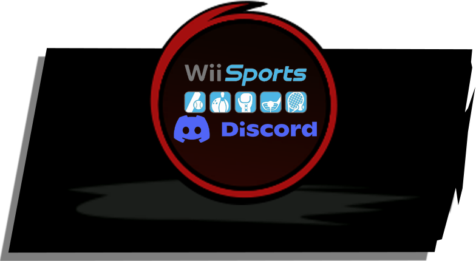
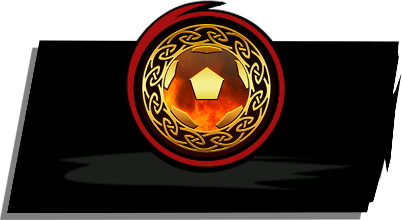
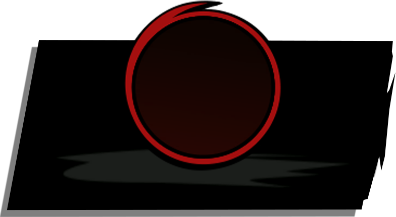

NINTENHUB
Nintenhub is a Nintendo-focused community hub that brings together fans, communities, and Nintendo-related content under one shared brand.

WOLFTV
WolfTV is a Europe-based gaming community focused on smaller titles and emerging competitive scenes. With online tournaments and community programs like Battle for the Den, Wolf Warrior, From Pack to Pack, ARMS Territorial League, and The Playing Grounds, WolfTV creates a home for players who value competition, community, and underrepresented games.

MARIO STRIKERS SPEEDRUNNING
Mario Strikers Speedrunning is a community focused on speedrunning all Mario Strikers titles, uniting players around records, routing, and fast-paced competition.

WII SPORTS
Wii Sports Server is a leading Discord community for Wii Sports fans and players, offering tournaments, weekly challenges, NetPlay support, and dedicated spaces for competition across Wii Sports, Wii Sports Resort, Wii Sports Club, and Switch Sports.

RAGNAROK
The RAGNAROK server was founded to unite the entire competitive Inazuma Eleven community. We focus on every Inazuma Eleven game that can be played online. RAGNAROK holds the records for the largest tournaments of Inazuma Eleven GO, Inazuma Eleven GO: Chrono Stones, Inazuma Eleven GO Galaxy, Inazuma Eleven GO Strikers 2013, and Inazuma Eleven GO Strikers 2013 Xtreme.

CUSTOM ROBOCENTER
Custom Robo Hub is a community for fans of Custom Robo: Battle Revolution and the series as a whole, offering regular netplay events, active friendlies, and ongoing efforts to enhance the competitive experience through balance updates.